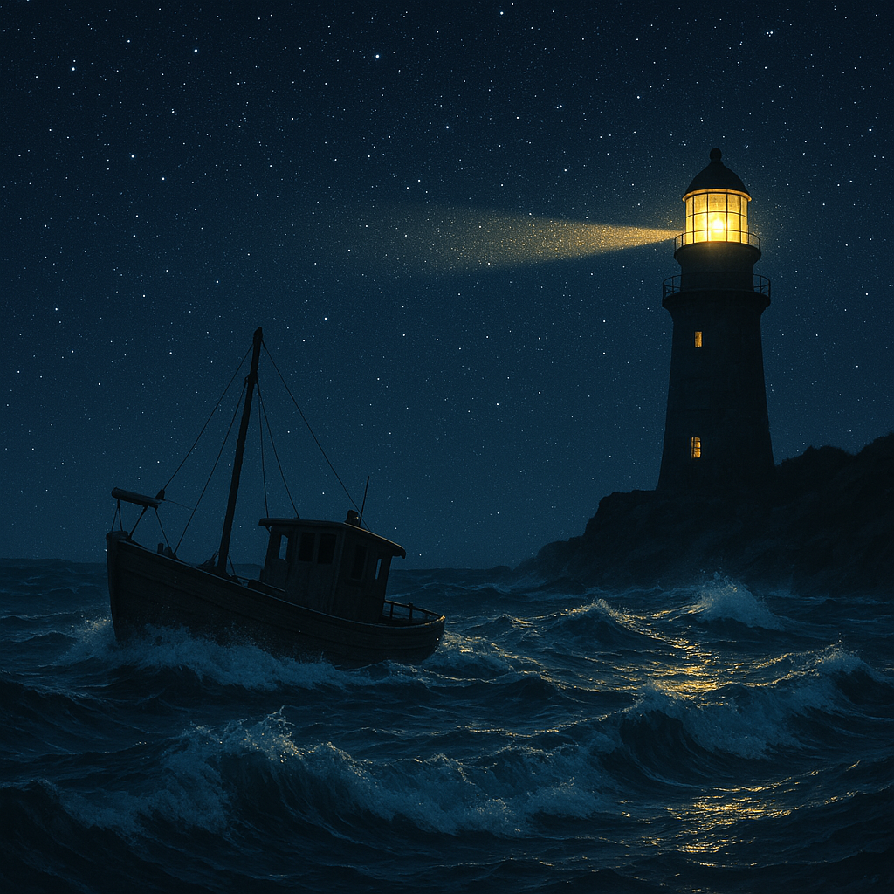

Name: Albert Xie, Jon Giller, Dhanin Wongpanich, Soren Ying

Title, Summary and Team Members
Team Members: Albert Xie, Jon Giller, Dhanin Wongpanich, Soren
Project Title: Dynamic Lighthouse and Coastal Waters
Description: We plan on creating a scene of a floating boat in water
with waves and a nearby lighthouse. We aim to create a realistic
wave/water simulation that interacts with the boat and shoreline. Our
lighthouse will rotate, dynamically lighting the scene.
Problem Description
Water physics and graphics are a well studied field of computer graphics,
however they are often neglected in most simulations that we interact
with. We are interested in how we can simulate water physics in a
realistic but computationally efficient way. We plan to create a scene
including a boat and a lighthouse along a shoreline to highlight our wave
simulation with static and nonstatic objects. With our simulation, we aim
to show the lighting conditions for a boat in the ocean at night and
simulate the danger of nighttime maritime navigation. Simulating water
realistically and interactions with both the shore and boat will be the
most difficult portions of the project. We will explore the sum of sines,
height field wave equations, and particle simulations for wave
simulations. We aim to use ray tracing for the dynamic lighting from the
lighthouse.
Goals and Deliverables
Plan to deliver
Dynamic light rotating from the lighthouse shining on the water and
the boat (raytracing)
Water splashing against the shore/boat (Water simulation)
Water moving the boat (boat simulation)
Hope to deliver
Moonlight shining (raytracing)
Subsurface scattering of illuminated water
Ripples behind the boat (water simulation)
Buoyancy based simulation of boat physics
Interactive demo where you can control the boat
We plan to deliver a video of the coastal scene, but hope to deliver an
interactive demo. We plan to compare other simulations/games with water
scenes to see how our quality compares.
Schedule
Week 1: Project proposal, preliminary plans for division of labor and
research on techniques
Week 2: Develop water simulation (waves, foam, primitive buoyancy
simulation)
Week 3: Work on raytracing for the light from the lighthouse shining
on the boat and the water
Week 4: Bug-fixes or development on hope to deliver goals